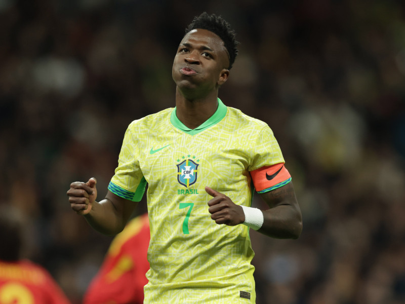

Nesta página, vamos explorar alguns dos jogadores que mais se destacaram nas últimas temporadas, tanto em clubes como na Seleção Brasileira. Esses atletas têm demonstrado talento e consistência, conquistando espaço entre os melhores do mundo.
Vini Jr
Atualmente uma das principais estrelas do Real Madrid, Vini Jr. continua a evoluir, destacando-se com seu ritmo, dribles e capacidade de marcar gols decisivos. Ele é considerado um dos melhores atacantes do mundo e tem sido fundamental nas competições europeias e domésticas. Sua capacidade de quebrar linhas defensivas e criar chances o tornaram peça essencial tanto no Real Madrid quanto na seleção brasileira
Rodrygo
Rodrygo também tem brilhado no Real Madrid, consolidando-se como um dos jovens mais promissores do futebol mundial. Ele tem atuado em várias posições no ataque, mostrando versatilidade e consistência. Suas performances na Champions League o tornaram um dos favoritos dos torcedores, e ele continua a crescer em importância no elenco da seleção brasileira

Raphinha
No Barcelona, Raphinha tem sido uma peça-chave no ataque, com dribles rápidos, criatividade e assistências importantes. Ele passou a ter mais espaço com o técnico Xavi, e suas performances garantiram um lugar de destaque tanto no clube quanto na seleção
Savinho
Savinho, ainda em desenvolvimento, está se destacando no PSV, onde tem tido a chance de amadurecer e aprimorar suas habilidades. Considerado uma promessa do futebol brasileiro, ele tem impressionado com seu estilo ofensivo e capacidade de improvisar
Endrick
Endrick, uma das maiores promessas do futebol brasileiro, tem sido seguido de perto após sua transferência para o Real Madrid, embora ainda esteja em fase de adaptação. Com apenas 17 anos, já mostrou sua capacidade de fazer gols e sua confiança com a bola, sendo um nome para o futuro tanto no Real quanto na seleção
Lucas Paquetá
Paquetá, atualmente no West Ham, tem desempenhado um papel importante no meio-campo, com sua visão de jogo e habilidade técnica. Ele ajuda a construir jogadas ofensivas e tem uma forte presença defensiva, tornando-se peça-chave para o clube inglês
Bruno Guimarães
Bruno Guimarães tem se estabelecido como um dos melhores meio-campistas da Premier League, atuando pelo Newcastle United. Seu talento em controlar o ritmo do jogo e suas contribuições ofensivas e defensivas o tornaram indispensável no time
Gabriel Magalhães
Zagueiro do Arsenal, Gabriel Magalhães tem se destacado com sua solidez defensiva e liderança. Sua habilidade no jogo aéreo e nos duelos físicos o tornam um dos defensores mais respeitados na Premier League
Éder Militão
Militão é um dos zagueiros mais confiáveis do Real Madrid, com excelente capacidade de leitura de jogo e versatilidade. Sua consistência o consolidou como um dos pilares defensivos tanto no clube quanto na seleção brasileira